Live Production
A lifetime of hands-on show production — audio, lighting, set design, and livestream engineering.
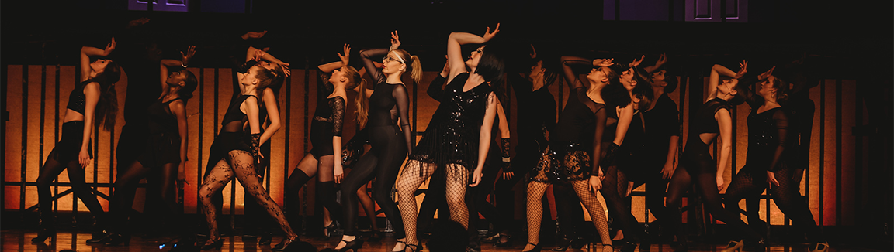
Starting with sound
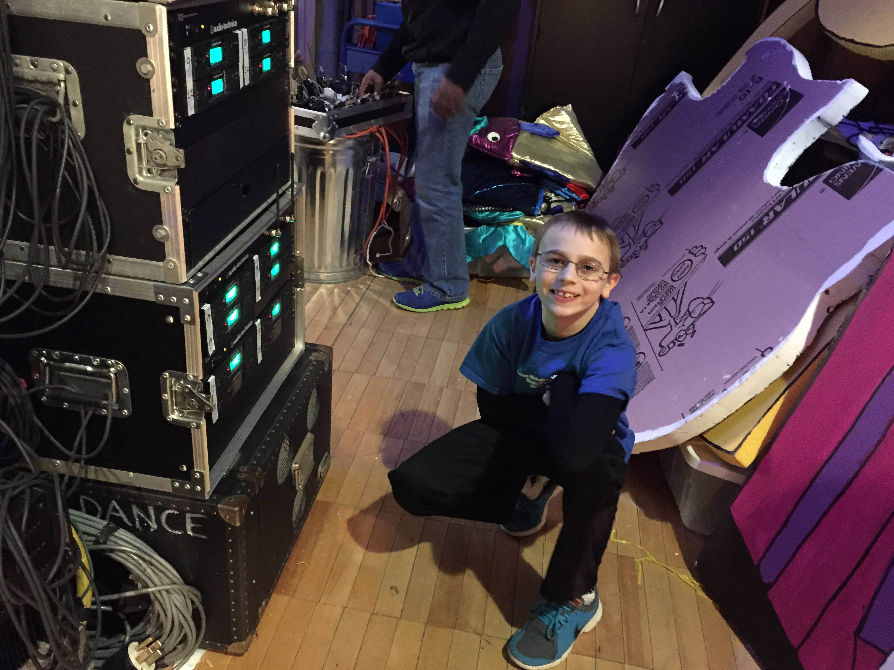
I started mixing sound at church in 2012, when I was around 8 years old. From that experience I was chosen as the sound head for my school in 3rd grade, and held the position through 8th grade.
Lighting & set design
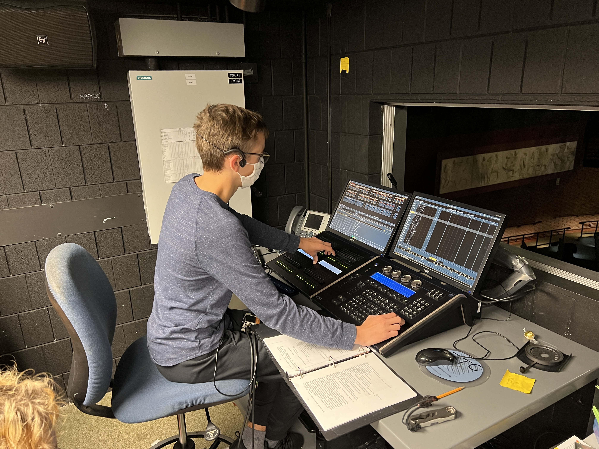
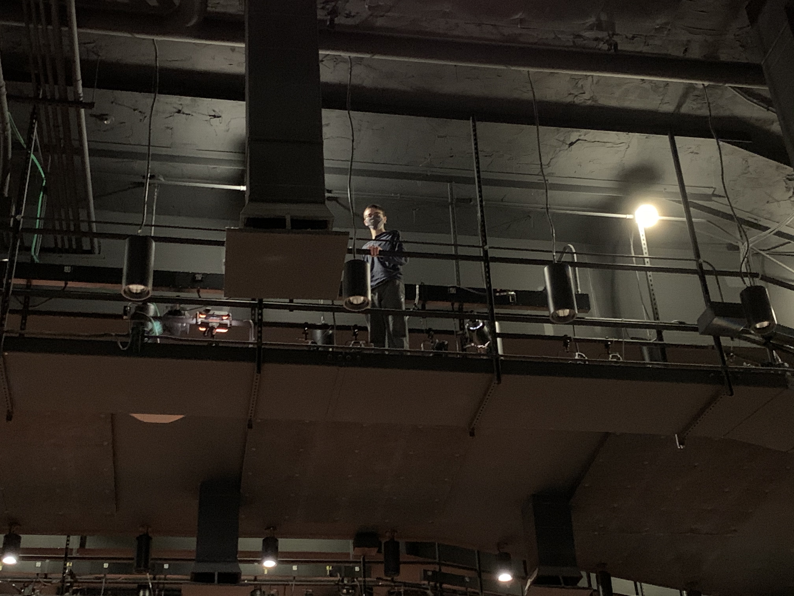
In high school I set out to learn lighting design. I was made lighting head my junior year, and also designed the set for our fall play and spring musical my senior year.
Here are some images from the musical "Chicago," where I was head of lighting and set design — from set model to finished stage.
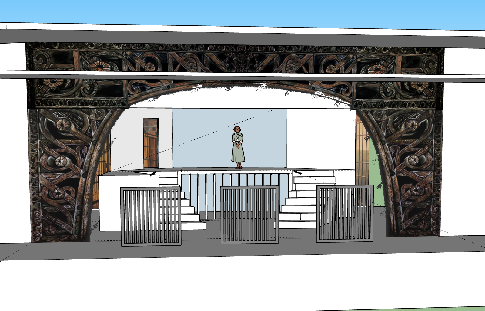
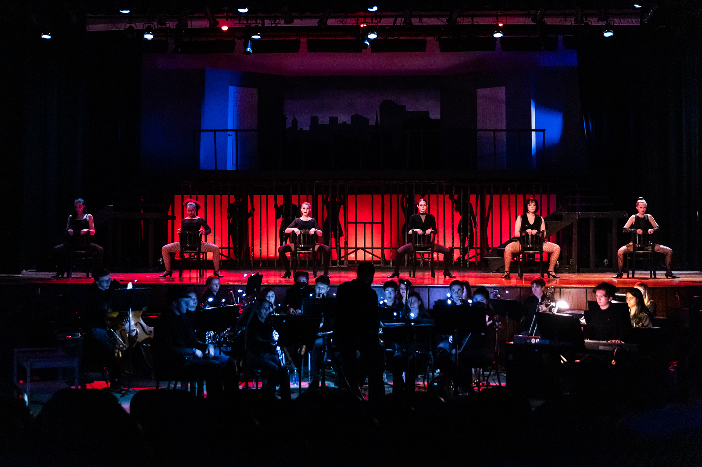
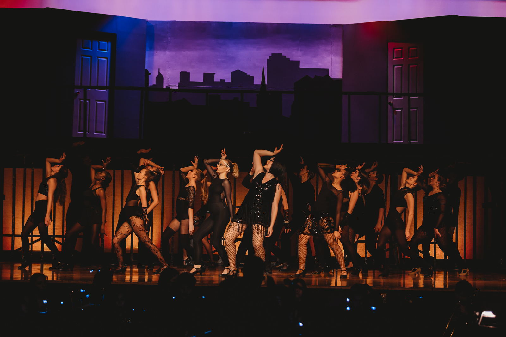
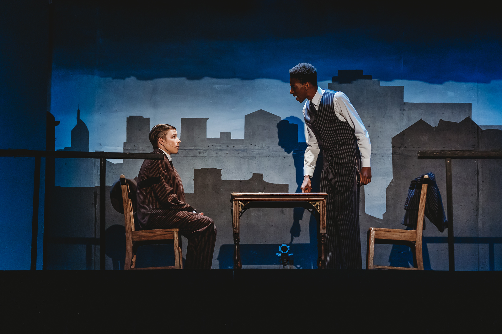
Church production & livestream
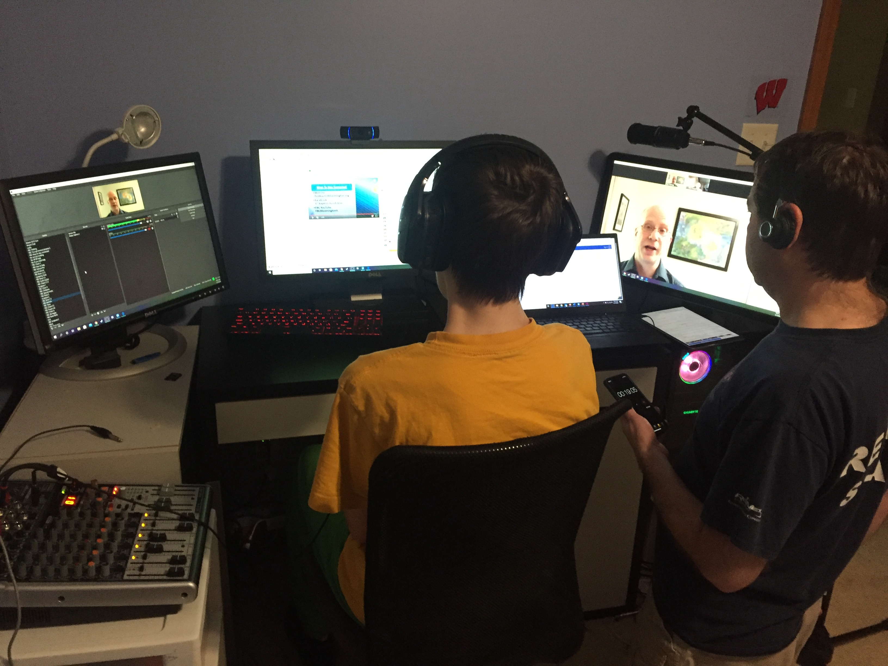
I've been volunteering in tech at my church since I was very young. During COVID, my dad and I ran all the services remotely from home, and as we transitioned back in person I designed a more substantial stream and audio system.
Before leaving for college, I trained other youth in livestreaming basics, and they now run the stream every Sunday. I continue to improve the system — including developing an app that controls a Canon PTZ camera over internet protocols using an Elgato Stream Deck.
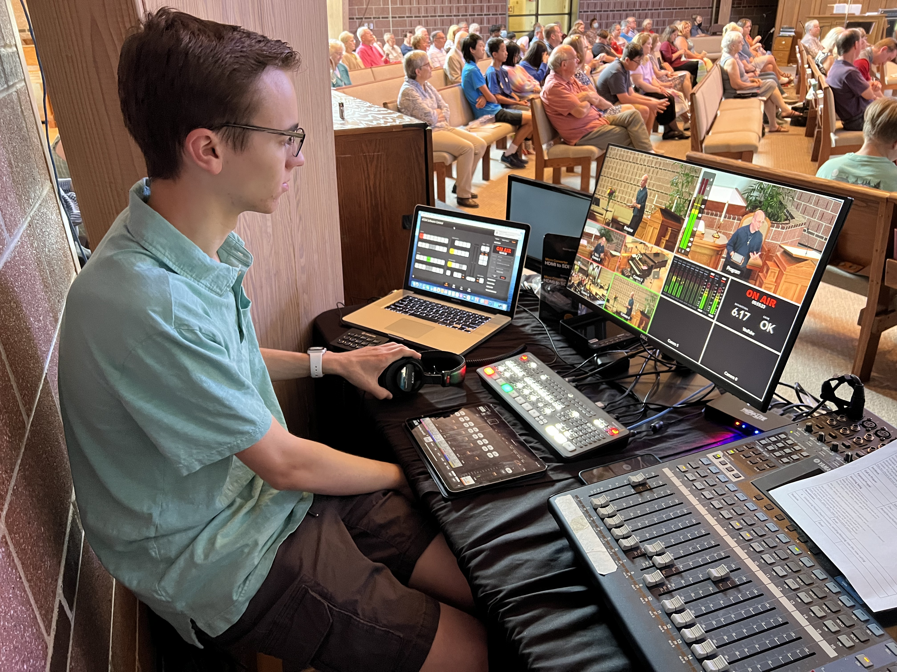
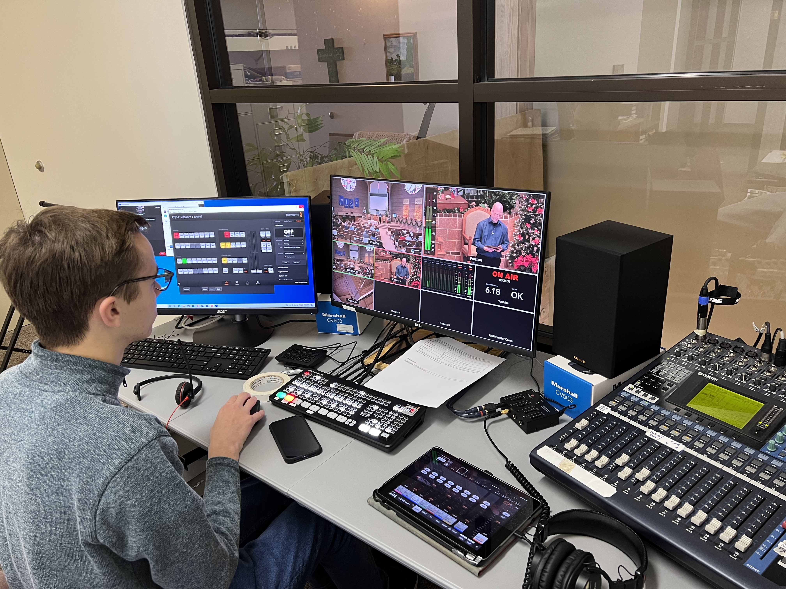